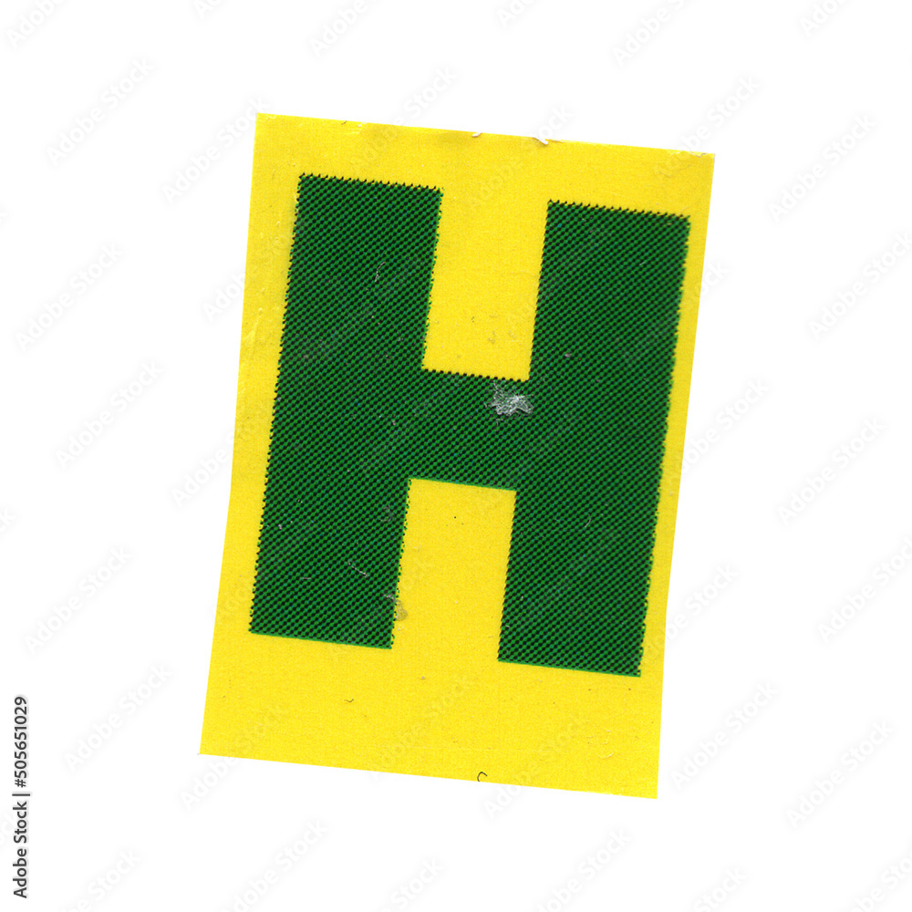
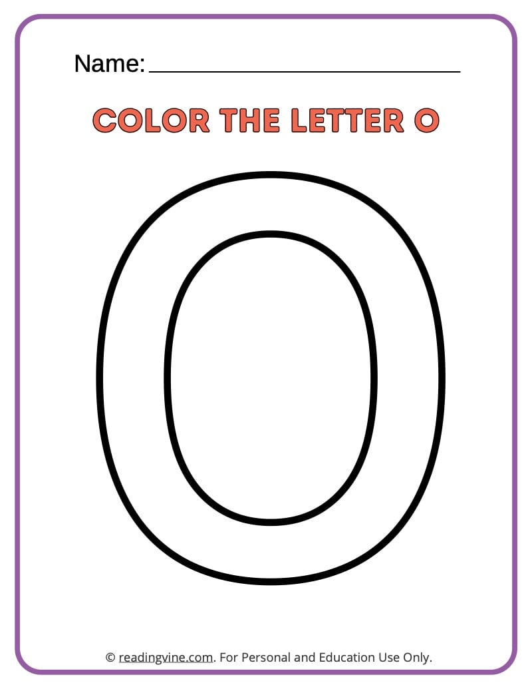
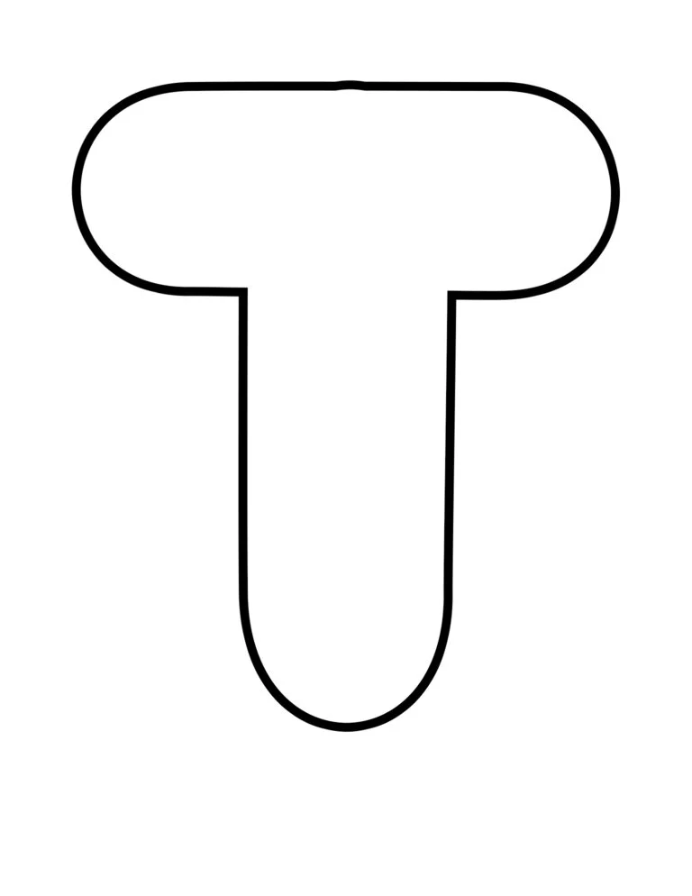

wet and wonderful years when there might be nineteen to twenty-five inches of rain, and the
land would



with grass.
Then would come six or seven pretty good years of twelve to
sixteen inches of rain. And then the dry years would come, and sometimes there would be only
seven or eight inches of rain.
The land dried up and the grasses headed out miserably
a few
inches high and great bare scabby places appeared in the valley.
The live oaks got a crusty look
and the sagebrush was gray.
The land cracked and the springs dried up and the cattle listlessly
nibbled dry twigs.
Then the farmers and the ranchers would be filled with disgust for the Salinas
Valley.
The cows would grow thin and sometimes starve to death.
People would have to haul water in barrels to their farms just for drinking. Some families would sell out for nearly nothing
and move away.
And it never failed that during the dry years the people forgot about the rich
years, and during the wet years they lost all memory of the dry years. It was always that way.
Reflection
Through this project I learned some of the fundamental components of HTML syntax. Though I’ve worked with HTML before, it was mostly to modify existing content rather than starting from scratch. My intent was to use hierarchy to emphasize certain words and phrases in the passage, and to disrupt/disorient the message in other parts. I ended up going through and trying out all sorts of different tags to experiment and see what visual differences I could make. I was really curious how much I could push the formatting to break the look of the text and I think I was somewhat successful at this. I wanted to embrace the chaos. However without the ability to alter the CSS, I was limited in how different I could make things look. I think my best solution for this was using images like on the word shout, which I feel like emphasize the word and give the page some sort of visual focus.